Mobile app for booking therapy and training. From first user interview to high-fidelity prototype. Created during the Google UX Design Course on Coursera.
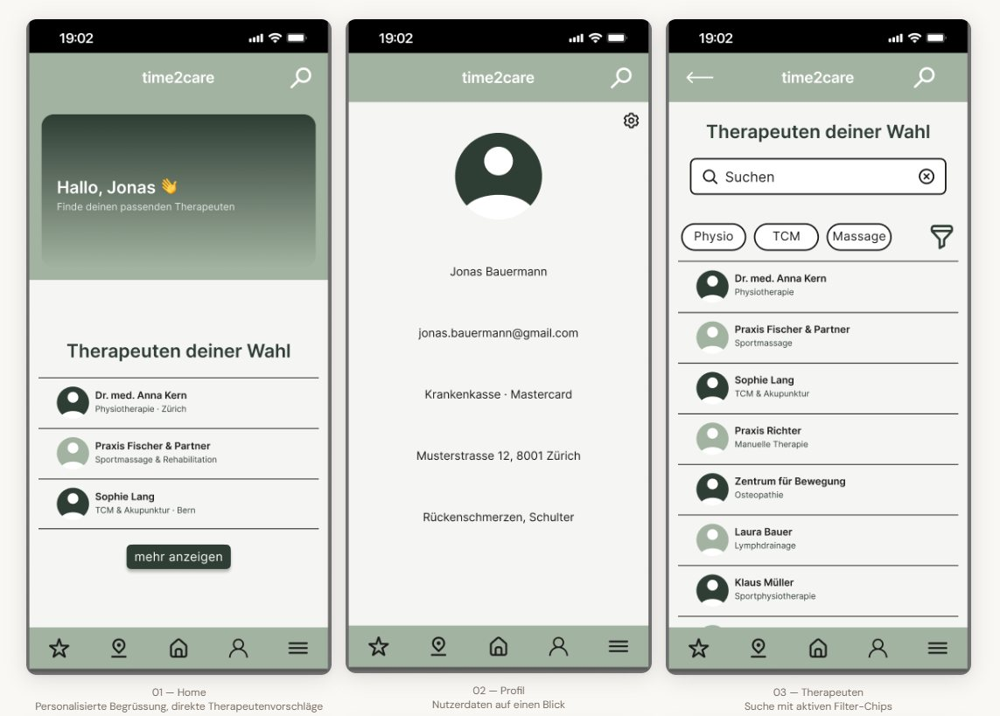
- Role
- UX Research, Wireframing, Prototyping, Usability Testing
- Scope
- Empathize, Define, Ideate, Prototype, Test
- Tools
- Figma
- Year
- 2025–2026
The product
time2care is a mobile app that allows users to find, filter and book therapy and training appointments quickly and easily. All from their smartphone, without phone calls or long waiting times.
The problem: booking therapy appointments still mostly happens by phone or email. That’s a real barrier, especially in the evenings and at weekends.
The goal: an intuitive app that makes search, filtering and booking so simple and transparent that users find an appointment in just a few steps.
Understanding the users
At the start I assumed that finding the right therapist was the biggest hurdle. After user interviews and an unmoderated remote usability study with five participants, it became clear: the booking process itself is also a problem. A lack of transparency and uncertainty about booking confirmation were the most common pain points.
“Not just simplifying the search, but improving the entire journey through to confirmation.”
4 identified pain points
High administrative effort
Many users can only book by phone or email. This takes time and puts off working people who want to book in the evenings or at weekends.
No central solution
Information about specialisations, qualifications and availability is hard to find or incomplete.
Complex interface
Not all users are good with technology. Older people in particular can quickly feel overwhelmed. The design needs to be intuitive and accessible.
Last-minute cancellations
Users are often unsure whether their appointment is really confirmed. Unclear confirmations lead to distrust and callbacks.
How it came together
-
01
Persona & user journey
Jonas Bauermann, a marketing manager from Zurich, wants to book an appointment quickly in the evening, without phone calls or long searches. The journey maps his path from first search to booking confirmation.
-
02
Lo-fi wireframes
Paper wireframes first, to test different approaches for the booking flow, then digital wireframes. The focus was a clear search with filters, so Jonas gets to the right therapist without detours.
-
03
Usability study
An unmoderated remote study with 5 participants showed where users get stuck in the flow. This was before the hi-fi design.
-
04
Hi-fi prototype
The colour concept is about calm and trust. A dark sage green as the main colour, light neutral surfaces, clear typography. Each screen reflects a concrete decision from the research.
Lo-fi wireframes
Drag or swipe to browse
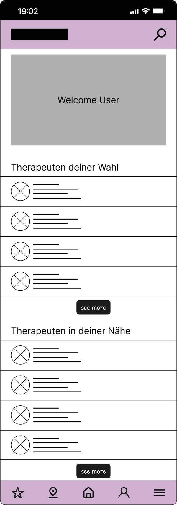
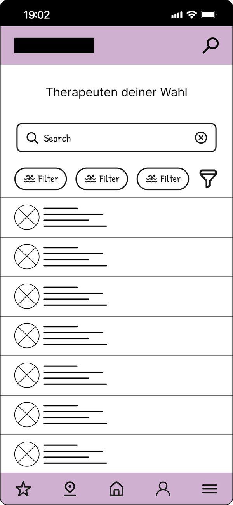
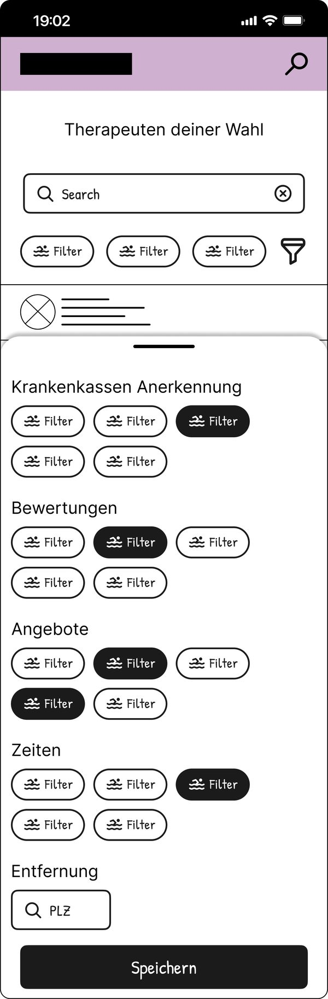
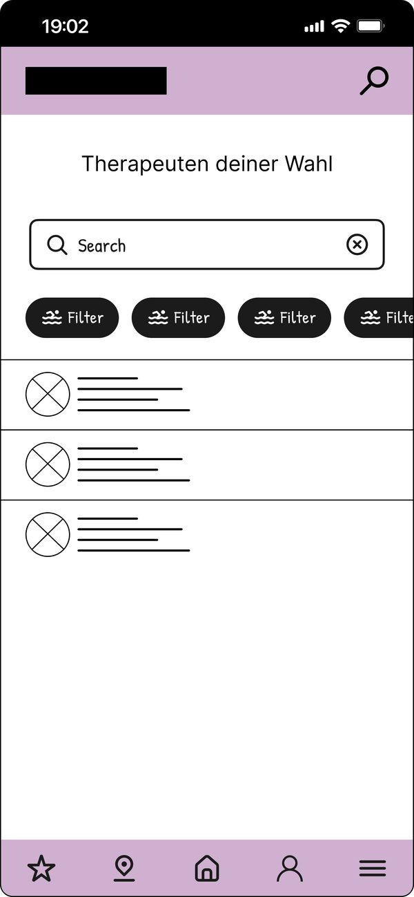
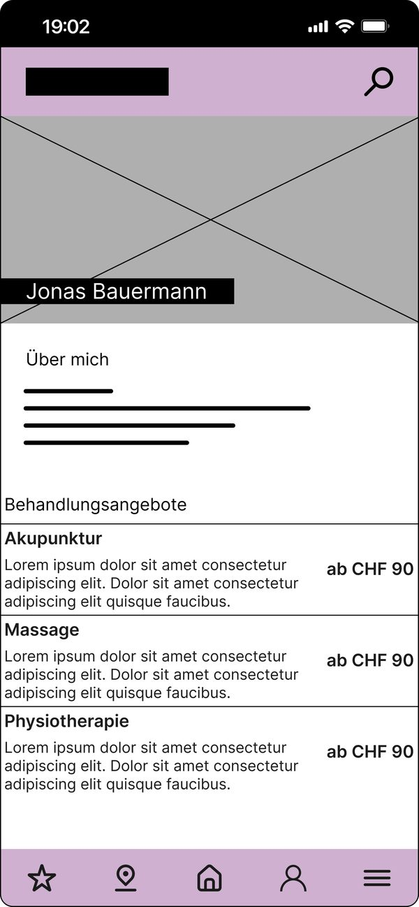
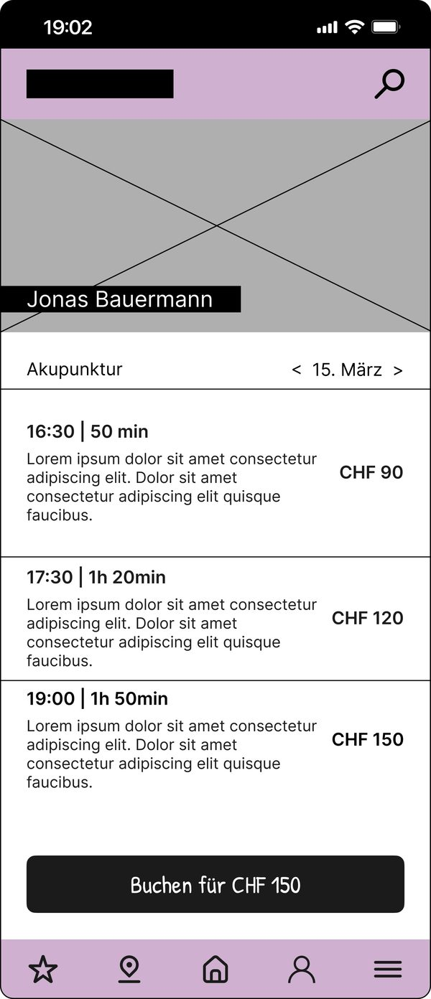
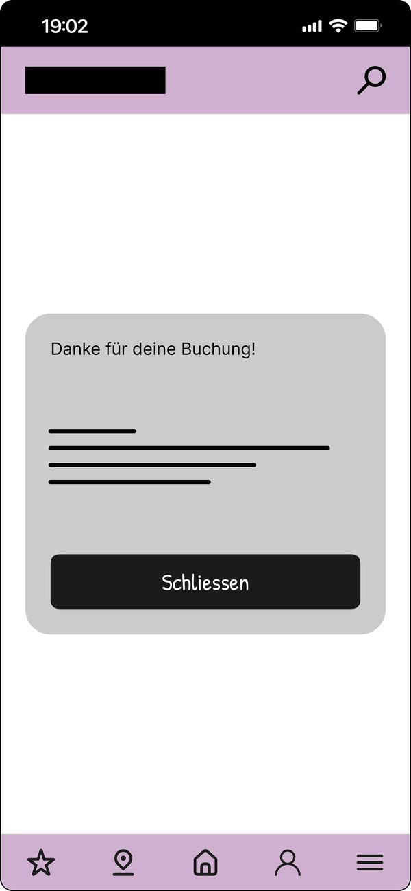
Hi-fi prototype
Drag or swipe to browse
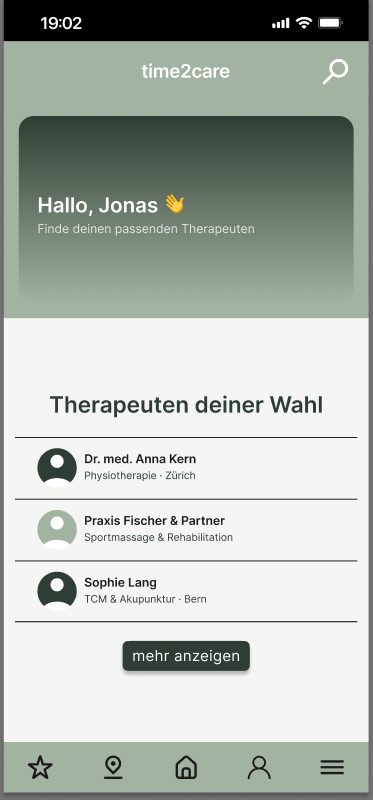
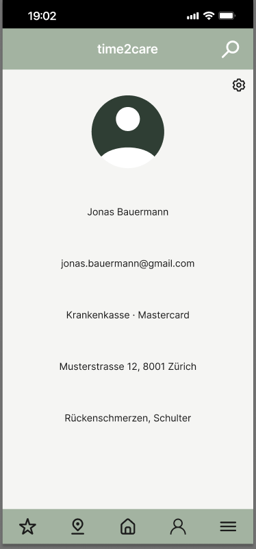
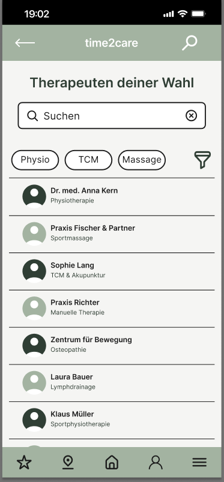
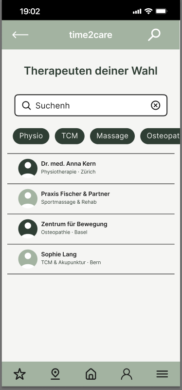
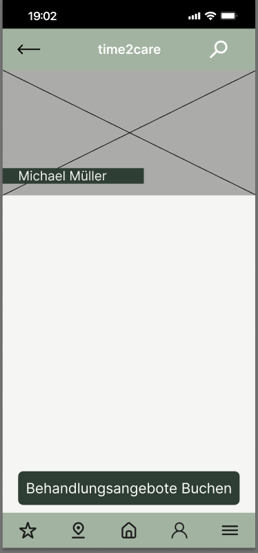
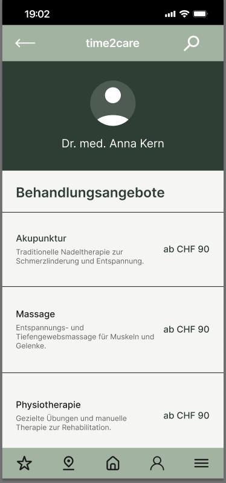
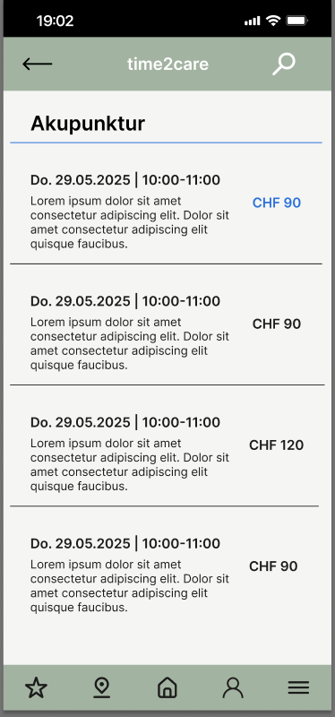
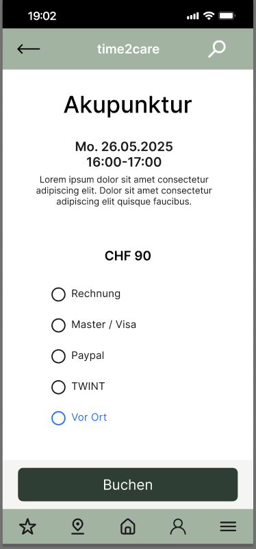
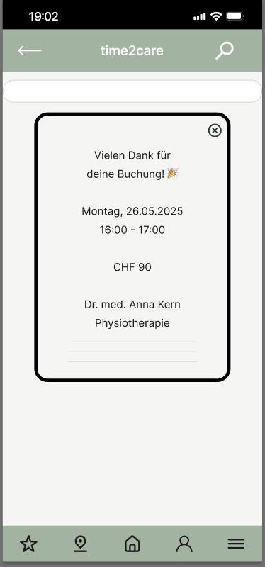
What the tests showed
The three key findings from the usability study, and how the hi-fi design responds:
Filters were unclear
Users overlooked the filter icon. The solution is visible filter chips below the search bar, with active filters highlighted.
Too many steps to book
The solution is direct access to free appointments from the detail view, without going through several screens.
Missing confirmation page
The solution is a separate confirmation page with all booking details and a clear success message.
Assumptions are not insights. Testing is.
My first assumption, that search was the main problem, was only half the truth. It took the interviews and usability tests to show that uncertainty about the booking confirmation matters just as much.
time2care was my first complete UX process, from research to hi-fi prototype. The course had a fixed process and little time. So I had to set priorities, and that helped me design more clearly.
With more time, I would go deeper into accessibility, especially for older users. I would also run a second usability test with the hi-fi prototype to check whether the changes really helped.